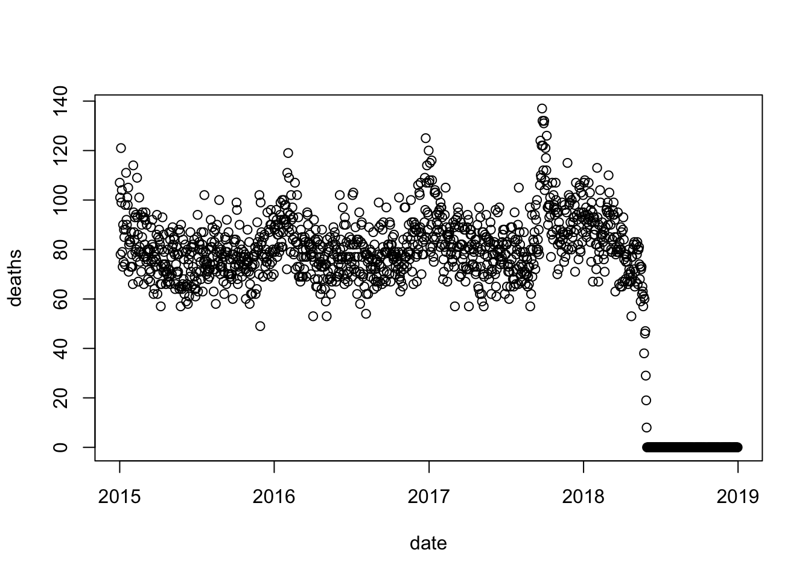
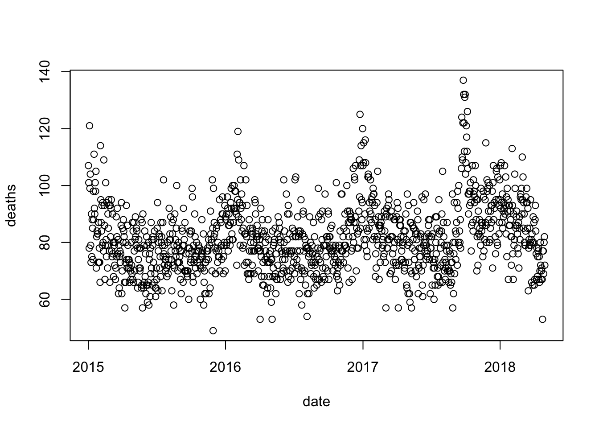
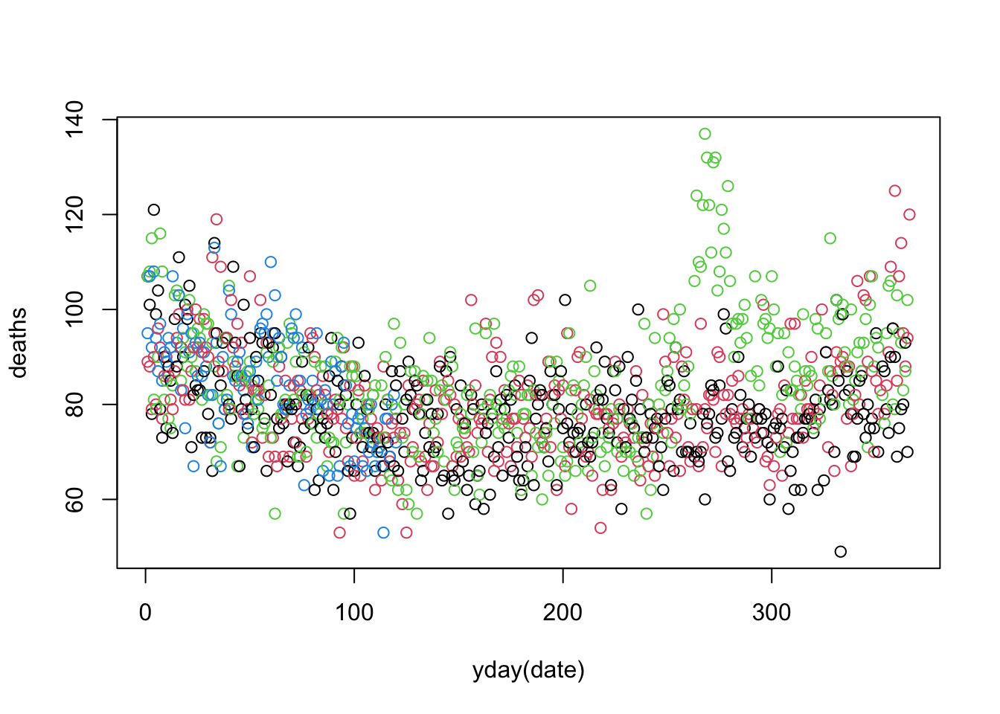
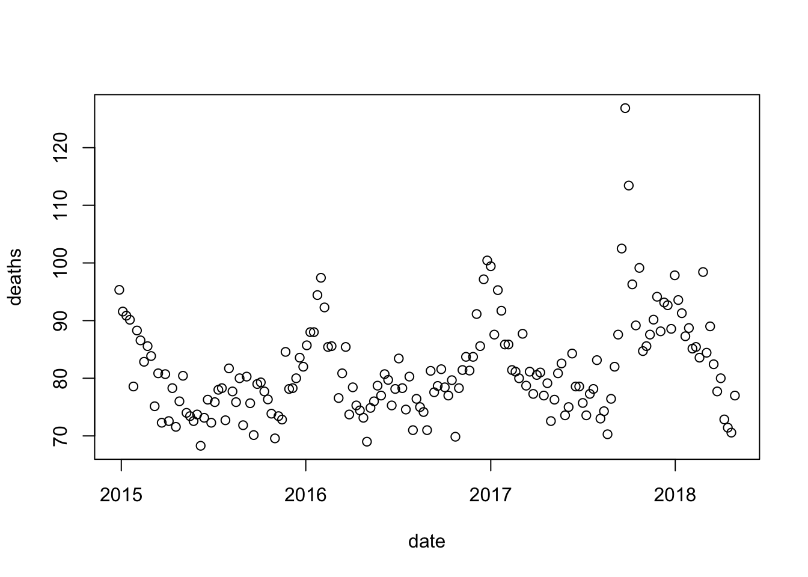

x <- as.Date("1970-01-01")
typeof(x)[1] "double"class(x)[1] "Date"as.numeric(x)[1] 0We have described three main types of vectors: numeric, character, and logical. When analyzing data, we often encounter variables that are dates. Although we can represent a date with a string, for example September 27, 2023`, once we pick a reference day, referred to as the epoch by computer programmers, they can be converted to numbers by calculating the number of days since the epoch. In R and Unix, the epoch is defined as January 1, 1970. So, for example, January 2, 1970 is day 1, December 31, 1969 is day -1, and so on.
x <- as.Date("1970-01-01")
typeof(x)[1] "double"class(x)[1] "Date"as.numeric(x)[1] 0x <- Sys.Date()
as.numeric(x)[1] 19627The date class let’s R know that it is date so you can extract year, months, days of the week etc…
You can make them look good using the format function:
format(x, "%B %d, %Y")[1] "September 27, 2023"There are many formats:
format(x, "%b %d %y")[1] "Sep 27 23"To see all the possibilities you can consult the data and time formats cheat sheet
month.name [1] "January" "February" "March" "April" "May" "June"
[7] "July" "August" "September" "October" "November" "December" month.abb [1] "Jan" "Feb" "Mar" "Apr" "May" "Jun" "Jul" "Aug" "Sep" "Oct" "Nov" "Dec"The lubridate package provides tools to work with date and times.
library(lubridate)An example of the many useful functions is as_date
as_date(0)[1] "1970-01-01"Another one is
today()[1] "2023-09-27"We can generate random dates like this:
set.seed(2013 - 9 - 10)
n <- 10
dates <- as_date(sample(0:as.numeric(today()), n, replace = TRUE))The functions year, month and day extract those values:
data.frame(date = dates, month = month(dates), day = day(dates), year = year(dates)) date month day year
1 1987-10-06 10 6 1987
2 2020-10-02 10 2 2020
3 1990-05-23 5 23 1990
4 2009-03-04 3 4 2009
5 1977-01-30 1 30 1977
6 1986-03-06 3 6 1986
7 2022-02-02 2 2 2022
8 1977-07-29 7 29 1977
9 2022-10-11 10 11 2022
10 2007-11-08 11 8 2007We can also extract the month labels:
month(dates, label = TRUE) [1] Oct Oct May Mar Jan Mar Feb Jul Oct Nov
12 Levels: Jan < Feb < Mar < Apr < May < Jun < Jul < Aug < Sep < ... < DecAnother useful set of functions are the parsers that convert strings into dates. The function ymd assumes the dates are in the format YYYY-MM-DD and tries to parse as well as possible.
x <- c(20090101, "2009-01-02", "2009 01 03", "2009-1-4",
"2009-1, 5", "Created on 2009 1 6", "200901 !!! 07")
ymd(x)[1] "2009-01-01" "2009-01-02" "2009-01-03" "2009-01-04" "2009-01-05"
[6] "2009-01-06" "2009-01-07"A further complication comes from the fact that dates often come in different formats in which the order of year, month, and day are different. The preferred format is to show year (with all four digits), month (two digits), and then day, or what is called the ISO 8601. Specifically we use YYYY-MM-DD so that if we order the string, it will be ordered by date. You can see the function ymd returns them in this format.
But, what if you encounter dates such as “09/01/02”? This could be September 1, 2002 or January 2, 2009 or January 9, 2002. lubridate provides options:
x <- "09/01/02"
ymd(x)[1] "2009-01-02"mdy(x)[1] "2002-09-01"dmy(x)[1] "2002-01-09"The lubridate package is also useful for dealing with times:
now()[1] "2023-09-27 09:48:37 EDT"You can provide time zones too:
now("GMT")[1] "2023-09-27 13:48:37 GMT"You can see all the available time zones with OlsonNames() function.
We can extract hours, minutes, and seconds:
now() |> hour()[1] 9now() |> minute()[1] 48now() |> second()[1] 37.46924The package also includes a function to parse strings into times as well as parsers for time objects that include dates:
x <- c("12:34:56")
hms(x)[1] "12H 34M 56S"x <- "Nov/2/2012 12:34:56"
mdy_hms(x)[1] "2012-11-02 12:34:56 UTC"x <- seq(today(), today() + 7, by = "days")x <- seq(today() - 365 + 1, today(), by = "days")
table(floor_date(x, unit = "week"))
2022-09-25 2022-10-02 2022-10-09 2022-10-16 2022-10-23 2022-10-30 2022-11-06
4 7 7 7 7 7 7
2022-11-13 2022-11-20 2022-11-27 2022-12-04 2022-12-11 2022-12-18 2022-12-25
7 7 7 7 7 7 7
2023-01-01 2023-01-08 2023-01-15 2023-01-22 2023-01-29 2023-02-05 2023-02-12
7 7 7 7 7 7 7
2023-02-19 2023-02-26 2023-03-05 2023-03-12 2023-03-19 2023-03-26 2023-04-02
7 7 7 7 7 7 7
2023-04-09 2023-04-16 2023-04-23 2023-04-30 2023-05-07 2023-05-14 2023-05-21
7 7 7 7 7 7 7
2023-05-28 2023-06-04 2023-06-11 2023-06-18 2023-06-25 2023-07-02 2023-07-09
7 7 7 7 7 7 7
2023-07-16 2023-07-23 2023-07-30 2023-08-06 2023-08-13 2023-08-20 2023-08-27
7 7 7 7 7 7 7
2023-09-03 2023-09-10 2023-09-17 2023-09-24
7 7 7 4 table(floor_date(x, unit = "year"))
2022-01-01 2023-01-01
95 270 What if I want to start counting on Mondays?
x <- seq(today() - weeks(1) + 1, today(), by = "days")
wday(x)[1] 5 6 7 1 2 3 4data.frame(day = x, week = floor_date(x, unit = "week", week_start = "Sun")) day week
1 2023-09-21 2023-09-17
2 2023-09-22 2023-09-17
3 2023-09-23 2023-09-17
4 2023-09-24 2023-09-24
5 2023-09-25 2023-09-24
6 2023-09-26 2023-09-24
7 2023-09-27 2023-09-24yday(x)[1] 264 265 266 267 268 269 270mday(x)[1] 21 22 23 24 25 26 27In the previous exercise section, we wrangled data from a PDF file containing vital statistics from Puerto Rico. We did this for the month of September. Below we include code that does it for all 12 months.
library(tidyverse)── Attaching core tidyverse packages ──────────────────────── tidyverse 2.0.0 ──
✔ dplyr 1.1.1 ✔ readr 2.1.4
✔ forcats 1.0.0 ✔ stringr 1.5.0
✔ ggplot2 3.4.2 ✔ tibble 3.2.1
✔ purrr 1.0.1 ✔ tidyr 1.3.0
── Conflicts ────────────────────────────────────────── tidyverse_conflicts() ──
✖ dplyr::filter() masks stats::filter()
✖ dplyr::lag() masks stats::lag()
ℹ Use the conflicted package (<http://conflicted.r-lib.org/>) to force all conflicts to become errorslibrary(lubridate)
library(purrr)
library(pdftools)Using poppler version 22.02.0library(dslabs)
fn <- system.file("extdata", "RD-Mortality-Report_2015-18-180531.pdf",
package="dslabs")
dat <- map_df(str_split(pdf_text(fn), "\n"), function(s){
s <- str_trim(s)
header_index <- str_which(s, "2015")[1]
tmp <- str_split(s[header_index], "\\s+", simplify = TRUE)
month <- tmp[1]
header <- tmp[-1]
tail_index <- str_which(s, "Total")
n <- str_count(s, "\\d+")
out <- c(1:header_index, which(n == 1),
which(n >= 28), tail_index:length(s))
res <- s[-out] |> str_remove_all("[^\\d\\s]") |> str_trim() |>
str_split_fixed("\\s+", n = 6)
res <- data.frame(res[,1:5]) |> as_tibble() |>
setNames(c("day", header)) |>
mutate(month = month, day = as.numeric(day)) |>
pivot_longer(-c(day, month), names_to = "year", values_to = "deaths") |>
mutate(deaths = as.numeric(deaths)) |>
mutate(month = str_to_title(month)) |>
mutate(month = if_else(month=="Ago", "Aug", month))
}) dat <- mutate(dat, year = as.numeric(year))month.abb.dat <- dat |> mutate(month = match(month, month.abb))date with the date for each observation. Hint: use the make_date function.dat <- dat |> mutate(date = make_date(year, month, day))with(dat, plot(date, deaths))
dat to exclude observations taken on or after May 1, 2018. Then, remake the plot.dat <- dat |> filter(date < make_date(2018, 5, 1))
with(dat, plot(date, deaths))
col argument in plot.with(dat, plot(yday(date), deaths, col = year - min(year) + 1))
res <- dat |> group_by(date = floor_date(date, unit = "month")) |>
summarize(mean(deaths))res |> filter(month(date) %in% c(7,9)) |>
mutate(month = month(date), year = year(date)) |>
arrange(month, year)# A tibble: 6 × 4
date `mean(deaths)` month year
<date> <dbl> <dbl> <dbl>
1 2015-07-01 76.8 7 2015
2 2016-07-01 79.2 7 2016
3 2017-07-01 76.4 7 2017
4 2015-09-01 75.1 9 2015
5 2016-09-01 78.8 9 2016
6 2017-09-01 98.4 9 2017September 2017 is an outlier.
res <- dat |> group_by(date = floor_date(date, unit = "week")) |>
summarize(deaths = mean(deaths))
with(res, plot(date, deaths))